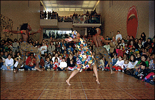

Family Days
54k
Timely Impressions
Sunday, March 9, noon-5 p.m.This family event celebrates the exhibition "Landmarks in Print Collecting: Masterpieces from the British Museum." See artists demonstrating various print-making techniques. Learn the difference between different types of prints. Hear music and see dance of 18th- and 19th-century England. See the film "Mary Poppins" and take part in an art activity where you create your own prints.
The Art of Glass
Sunday, April 20, noon-5 p.m.Celebrate the art of contemporary glass during this special family program highlighting the exhibition "Dale Chihuly: Installations 1964-1997." Create organic transparent sculptural forms in an art activity throughout the day and in a special "bubble" activity room. See a demonstration of glass blowing and hear music that has inspired Dale Chihuly from Debussy to the Beatles. View artwork by Minneapolis and St. Paul Public School students featured in the 3M Media Student Art Project which culminates in billboards placed around the metro area this spring.
For more information call (612) 870-3131 or 800/876-ARTS.